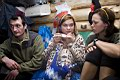
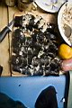
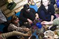

|
|
НОВОГОДНЯЯ СКАЗОЧКА
|
Да уж, катанули отлично! Мягкий и глубокий снег, в котором особенно чувствуется, что не едешь, а плывешь! Странное чувство, как будто я стал лучше чувствовать склон... То ли это из-за снега, то ли шерегешская практика дает о себе знать, то ли то, что ехал специально помедленнее, наслаждаясь каждой секундой спуска, каждым поворотом... Еще сам не понял :) Да, еще внизу кулуара порадовали слова Светки - "Все отлично, только я ничего не поняла, еще хочу!" :) Знакомое состояние - такое часто бывает после хорошей катухи по новому склону... Про утро 31-го. Я бы не сказал, что оно было ленивым, некоторые люди время даром не теряли ;) Да, было тепло. Ну еще бы, я же печку в 5 утра растапливал :) Еще утро было засушливым, ну дык, после вчерашней-то коньячной посиделки :) Заныкивание бутылочки с водой в пределах утренней досигаемости стало доброй традицией на все последующие деньки :) А то что утром все батонили из-за того, что никому не хотелось варить на всех - вот этого больше не надо! Я могу без проблем на всех сварить с утра пораньше, только я же все перебужу, потому как кухня у нас на спальных местах пока еще и половину народа надо сдвинуть на другую половину, чтобы горелку поставить :) И все будут еще и недовольны, и весь день будут ватные от недосыпу. И так тропить ни кому не хочется... Нееет друзья, так дело не пойдет! Это ваше сщасте, что последний день уходящего года, и что каникулы, а так-то в "Нашей Маше" обычно утро ленивым не бывает :) Утро у нас бывает с яичницей, поджаренной на сале! А после такого завтрака можно хоть на Мамай затропить! Когда все пошли тропить, а я думал брать снегоступы или не брать, пришла Ульяна, а за ней потом пришли Антон и Ксюша. Так что у нас уже собралась приличная компания из 9 человек. Да, еще Уля сказала, что она боится ближайшего будущего, ведь она увидела, сколько водки Антон переливал из стекла в пластик :) А снегоступы я взял, и вторую часть пути до трех берез тропил в одного, вырвав пальму первенства из рук и ног Вовы и Саши. И не надо говорить, что за мной надо было перетрапливать :) Нифига подобного - народ почти не отставал, за 2 часа дошли, а это нормально. И вообще, не надо надеяться на то, что кто-то встанет раньше тебя и все затопит, эдак можно до вечера батонить, наглядные примеры жили в кунге :) Считаю, что более позитивно и полезно получать удовольствие от коллективного процесса создания лестницы в небо! Тем паче, что нам всем по ней потом еще все дни ходить :) Лёха Слюдянский |
Скоро сумерки, новогодний вечер, пора и за приготовление новогоднего стола взяться...
А у нас пополнение! - пришли еще 3, и на троих принесли:
1. мегапозитивное настроение
2. кусочек японии (узнали только вечером)
3. кальян
4. еще одного фотопарацци
5. мегакулинарные изыски :)
Итого было заготовлено:
_Шампанское (куча штук, в т.ч. и под потолком :) )
_Роллы, куча штук!!! (я в шоке раз)
_Курица с ананасами!!! (я в шоке два)
_Салаты (и неизменный оливье)
_ФотЕГ с большой вспышкой :)))
_Снегурочка 2 шт. (по очередности)
_Дед мороз 2 шт. (по очередности)
_Стишки и песенки под елку (неограниченно)
_Елка новогодняя наряженная 1 шт.
_Елка лесная красавица, украшенная искрящимся снегом (неограничнно)
_Хоровод (неограниченно)
_Участнеги хоровода (ограничено количеством зашедших :))
_Читинские забавы и беготня от зимухи к кунгу (неограниченно, я в шоке три)
_Прыги с кунга и фотосэты (неограниченно)
_Фейерверки, мафия, ароматические свечи (по количеству участнеГов...почти)
_Время - ограниченно и равно одной новогодней ночи :))))
Новый год встречали сначала по камчатскому, потом по владивостокскому
времени (а не один ли у них часовой пояс???:) ), потом в хабаровске,
потом в чите, и наконец, уже уставшие ждать его, снова набрались -гм...
:)))- сил, зажгли бенгальские огни и встретили по-нашему: по-мамайско-иркутски
:)))
С новым годом 2008, Мамайская горная республика! :))))
И понеслось: хороводы, дед Мороз с внучкой из леса появились аккурат к бою курантов :)))), гости в виде всей читинской братии и изумленные лица обитателей кунга :))), фейерверки взлетели в небо!
Улыбки, блеск, смех - никто не был грустным в эту ночь, счастья и снега хватило на всех :)))) Хороводы вокруг новогодней елки, но и этого показалось мало знойному Деду Морозу: елок в лесу много, и хоровод умчался в сугробы :))) Потеха :)
Вспышки фотоаппаратов, смех, мишура и новогодняя шапочка Снегурочки, полные карманы конфет и конфетти :)))) Тепло рук в хороводе, чьи-то объятия и поздравления, бокалы (именно бокалы!) с шампанским, да и с чем погорячее тоже :)))
Успокоилось это все только к утру в жарко протопленной зимухе (Леха, респект за "нашу Машу")
Leen
|
Да, а Новый Год подкрался незаметно... Вроде бы только что покатались, сидели тихо-мирно отдыхали, печку кормили дровами, себя кормили курицей с рисом и ананасами (Ксюша постараласть), водочку в меру возможностей попивали, музычку слушали... Играли в высокоинтеллектуальные игры типа "Я поеду на Камчатку...", "Я поеду в Шерегеш..." и в "Мафию" играли... Причем те, кто поехал на Камчатку, не смогли уехать в Шерегеш, а кто у нас 'мафия' и кто 'честные люди' я так и не врубился понимать, зато все поняли кто у нас 'проститутки' и долго их потом вспоминали :) Антон крутил вспышке голову, ослеплял всех отраженным от крыши светом и грозился исправить баланс белого:) Девченки как-то быстро сделали салаты "Тазик оливье", "Гранатовый браслет" и "Еще что-то вкусное" (вот оно - содержимое тяжелого рюкзака Светы, да и тазик для оливье был реальный:) Да, еще Ксюша с Антоном всех удивили японской кухней - прямо при всех, никого не стесняясь, замутили роллы из морепродуктов. Это такие колбаски, их потом нарезали и получились суши (если я конечно правильно понял, а то что это необычно и вкусно думаю поняли все:) Ульяна порадовала людей молочком, собственного сбора и приготовления:) Я и Света наряжали красавицу ёлочку, ну может быть и не совсем пушистую, зато рядом с зимухой:) Еще я с Ульяной ходил искать соевый соус у читинцев и в кунге. У читинцев соуса не нашли, зато нашли Лёву, специально для Ули:) В кунге с соусом тоже было печально, да и вообще было печально - что-то я Макса и Андрюху в последнее время не узнаю, совсем ребята расслабились, я их честно предупредил, что если они не зайдут к нам в гости, то мы прийдем к ним :)   
Порядок выше расписанных событий я точно не помню, но помню, что ближе к 12-ти водка стала сменяться шампанским, причем наполнились бокалы быстро и стали быстро осушаться - все говорили за всё своё хорошее в уходящем году. А тут и 12 пробило - на часах и мобилах! Еще раз наполнились бокалы и их тоже надо сразу выпивать, загадав самое-самое желанное желание :) Появились уже веселые и отметившиеся читинцы:) Посыпались в салаты бенгальские искры, народ пошел на свежий воздух стрелять салюты и поджигать фейерверки возле елки. Я тут как-то сразу оброс белой бородой, на голове появилась красная шапка, а в руках - мешок с подарками. Детишки стали рассказывать стишки, получать конфеты и дружно звать Снегурочку. Внучка зачем-то грозила Дедушке кулаком, потом они спели детишкам новогоднюю песенку, а детишки опять завалили Деда Мороза стихами, а он их конфетами. Хоровод вокруг елочки неожиданно захороводился в сторону леса к другим елочкам, но далеко не ушел по причине глубокого снега:) Традиционное сноубордическое валяние в снегу понравилось многим участникам веселухи:) Далее поступило предложение пойти в сердце Мамая, коим оказался кунг. Осколок цивилизации, легендарное жилище подверглось нашествию 17-ти пьяных человеков, причем каждый считал своим долгом залезть на крышу, и даже спрыгнуть с нее, и даже со сноубордом:) То, что в кунге в это время тихо-мирно отдыхали в спальниках добрые и внешне трезвые люди - никого не волновало, трезвых людей некоторые пьяные личности пытались напоить, вытащить из спальника в сугроб и расцеловать:) Ну в общем все закончилось благополучно - никто ничего себе не сломал во время всего этого безобразия, и никого в снегу не потеряли, и никого не стошнило. Взрослеем:) Остаток ночи догуливали в зимухе, не помню до скольки часов, да и не важно. Помню, что грели руки, ноги и что там еще все время замерзает? :) Помню такие серьезные разговоры и слова, что даже и не помню когда и где уснул, но помню с кем:) Да... Новый Год на Мамае... Лично для меня он был необычным не только потому, что он был первым Новым Годом вне города, вне традиционного застолья в семейном кругу. Он был просто сказочным, а в чем смысл сказки я вам и не скажу, это же дело такое, это же Сказка, а она ведь у всех своя, и у нас она была на все 100% !!! Это точно :) Лёха Слюдянский Фото: Антон Климов |
Январь 2008